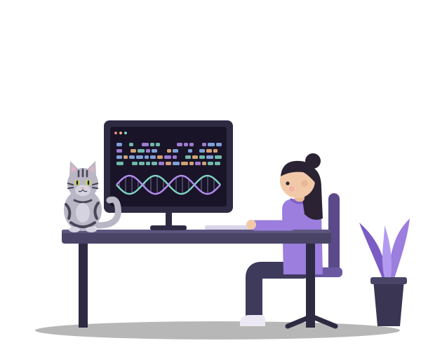

Virus–host structural mimicry
Large-scale Foldseek searches of viral structure databases against the AlphaFold proteome, looking for viral proteins that imitate host folds.
Bioinformatics PhD student, Steinegger Lab
I come from computer science and computational biology, and I spend most of my time where they overlap: searching protein structures at scale, modelling how viruses are seen by the immune system, and building tools that make those questions answerable on a cluster rather than a whiteboard.

Large-scale Foldseek searches of viral structure databases against the AlphaFold proteome, looking for viral proteins that imitate host folds.
Combining fitness models with HLA presentation scoring to ask which epitopes a virus can afford to lose, using HIV as the test system.
Predicting whether exposure to one strain protects against another — a question that matters well before the next outbreak starts.
One or two sentences on what it does and why someone should care.
View the codeOne or two sentences on what it does and why someone should care.
View the codeOne or two sentences on what it does and why someone should care.
View the codeReplace this with a short paragraph in your own voice: where you studied, how you moved from computer science into biology, what you're doing in Boston, and what you want to do next. Two or three sentences is plenty — people who want detail will open the CV.
Outside the lab I run a cat account and take too many photos of an American shorthair who has opinions about my keyboard.
The fastest way to reach me is email.